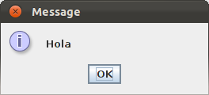
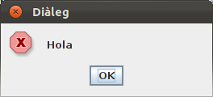
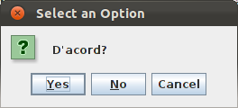
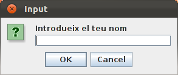

6.1.- JOptionPane
Swing ens proporciona una classe per a fer finestres de diàleg estàndar, sense haver de construir un JDialog. Es tracta de JOptionPane, que ens permet crear diàlegs senzills, com tantes i tantes vegades voldrem construir. Aquestos diàlegs seran modals, i podem fer-ne d'unes quantes maneres:
Ho farem sempre sobre l'últim exemple, el del diàleg: un botó que quan l'apretem traurà un missatge. Tan sols modificarem la línia 32 i importarem el JOptionPane (i per tant la línia a modificar quedarà en la 33)
Diàlegs de Missatge
Senzillament trauen un missatge i un botó per a tancar el diàleg.
JOptionPane.showMessageDialog(this, "Hola");

Opcionalment podem posar també un títol i canviar el dibuixet, per a que en compte d'informació indique error, pregunta, ...
JOptionPane.showMessageDialog(this, "Hola", "Diàleg",JOptionPane.ERROR_MESSAGE);

Els valors per al símbol poden ser ERROR_MESSAGE, INFORMATION_MESSAGE, QUESTION_MESSAGE, ...
Missatge de confimació; showConfirmDialog()
showConfirmDialog() ens permet mostrar un diàleg amb un comentari i uns botons de Sí, No , Cancel·lar. Aquest mètode torna un valor, que serà l'opció triada.
En aquest exemple mostrem per l'eixida estàndar l'opció triada:
@Override
public void actionPerformed(ActionEvent e) {
if (e.getSource()==boto1){
int opcio = JOptionPane.showConfirmDialog(this,"D'acord?");
if (opcio == JOptionPane.OK_OPTION)
System.out.println("Sí");
if (opcio == JOptionPane.NO_OPTION)
System.out.println("No");
if (opcio == JOptionPane.CANCEL_OPTION)
System.out.println("Cancel·lat");
}
}

Els botons que volem que apareguen són configurables.
Diàleg d'entrada: showInputDialog()
Per a poder introduir un text, amb dos botons, d'acceptació i cancel·lació. El mètode retornarà un string amb el text introduït (si s'ha apretat cancel·lar, aquest string serà nul).
String nom = JOptionPane.showInputDialog("Introdueix el teu nom");
System.out.println("Hola, " + nom);

Llicenciat sota la Llicència Creative Commons Reconeixement NoComercial SenseObraDerivada 2.5